Introduction to Galaxy
- This is a short introduction to the Galaxy user interface - the web page that you interact with.
- We will cover key tasks in Galaxy: uploading files, using tools, and viewing histories.
What does Galaxy look like?
- Go the custom McGill SI Galaxy Server ⇱ for this course
- Use Chrome, Safari or Firefox; Internet Explorer/Edge is not recommened.
- This is an image of Galaxy Australia; which may look slightly different to the one we are using in this course. You may have used the “official” main Galaxy server usegalaxy.org before.
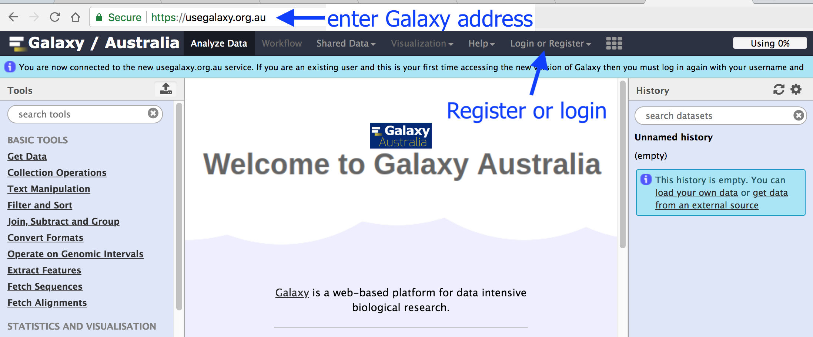
- The Galaxy page is divided into three panels:
- Left: tool list
- Middle: viewing panel
- Right: history of analysis and files
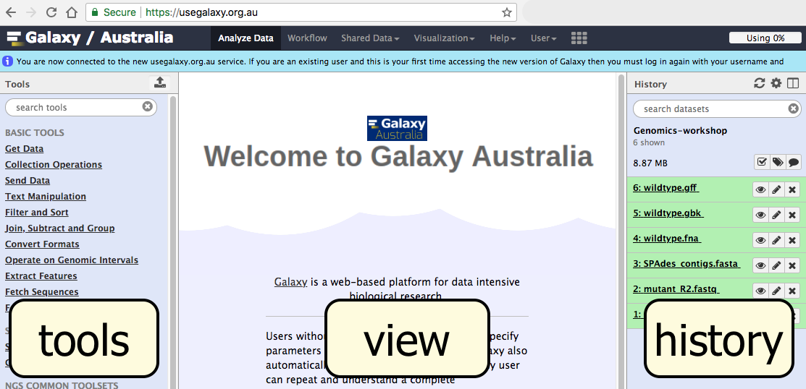
- The first time you use Galaxy, there will be no files in your history panel.
Name your current history
Your “History” is in the panel at the right.
- Go to the History panel
- Click on the history name (“Unnamed history”)
- Type in a new name, for example,
My-Analysis - Press Enter
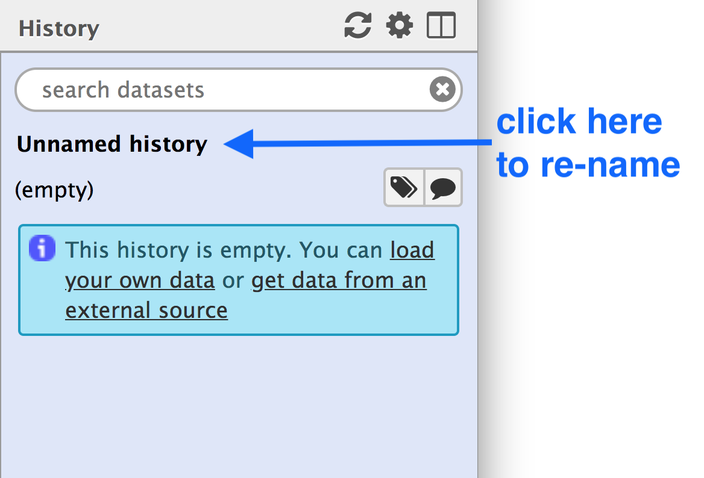
Upload a file
Your “Tools” are in the panel at the left.
- Go to the Tools panel
- Click
Get Data (at the top of the list) - Click
Upload File
This brings up a box:
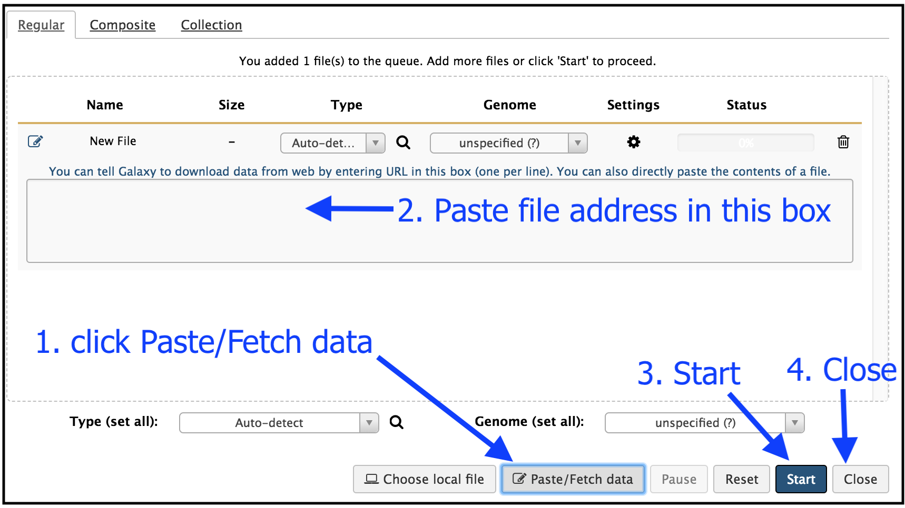
- Click
Paste/Fetch data - Paste in the address of a file: https://zenodo.org/record/582600/files/mutant_R1.fastq
- Then click
Start . - Then click
Close . Your uploaded file is now in your current history.
When the file has uploaded to Galaxy, it will turn green.
- Grey means “waiting to run”; yellow means “in progress”.
What is this file?
- Click on the eye icon next to the file name, to look at the file contents.
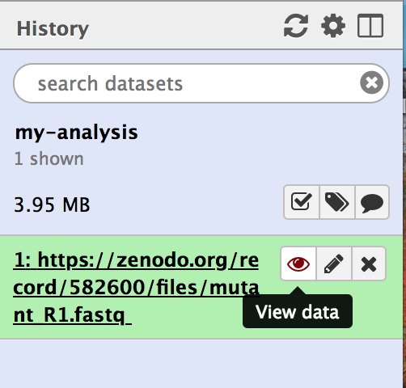
The contents of the file will be displayed in the centre Galaxy panel.
- This file contains DNA sequencing reads from a bacteria, in FASTQ format:
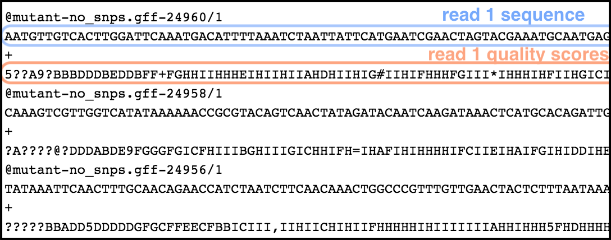
Use a tool
Let’s look at the quality of the reads in this file.
- In the tools panel search box, type in FastQC.
- Click on the tool
FastQC - This brings up a window in the centre of the screen.
- For
Short read data from your current history select the FASTQ file that we uploaded. - Leave the other parameters as they are.
- Click
Execute . - This tool will run and the two output files will appear at the top of your history panel.
View results
We will look at the output file called
- Note that Galaxy has given this file a name according to both the tool (FastQC) and the data file (“data 1”) that it used.
-
The name “data 1” means the data file (our FASTQ file) which was file number 1 in Galaxy’s current history.
-
Click on the eye icon next to the output file.
- The information is displayed in the centre panel.
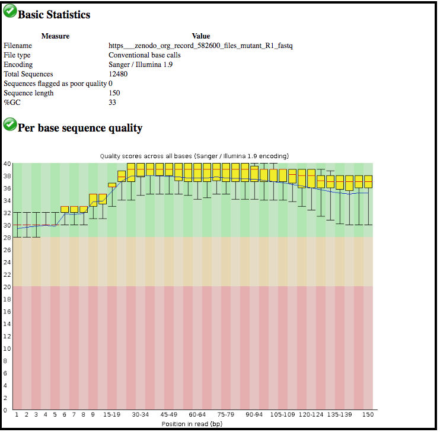
This tool has summarised information about all of the reads in our FASTQ file.
- What was the length of the reads in the input FASTQ file?
- Do these reads have higher quality scores in the centre or at the ends?
Optional: Run another tool
Let’s run a tool to filter out lower-quality reads from our FASTQ file.
- In the tool panel search box, type in “Filter by quality”.
- Click on the tool
Filter by quality - Under
Library to filter , Galaxy will probably have found your input FASTQ file. If not, select this file in the drop-down box. - Under
Quality cut-off value , type in 35. - Under
Percent of bases in sequence that must have quality equal to / higher than cut-off value , type in 80. - Click
Execute .
After the tool has run, the output file will appear at the top of your History panel.
- This file will be called
Filter by quality on data 1 . - Remember that Galaxy has named this file according to the tool it used (“Filter by quality”) and the data file (“data 1”).
- The actual numbers in front of the files in the history are not important.
What are the results from this filtering tool?
- We could click on the eye icon to view the contents of this output file, but it will not be very informative - we will just see a list of reads.
- Instead, let’s click on the output file name in the History panel. This expands the information about the file.
- We can see that 1786 low-quality reads were discarded.
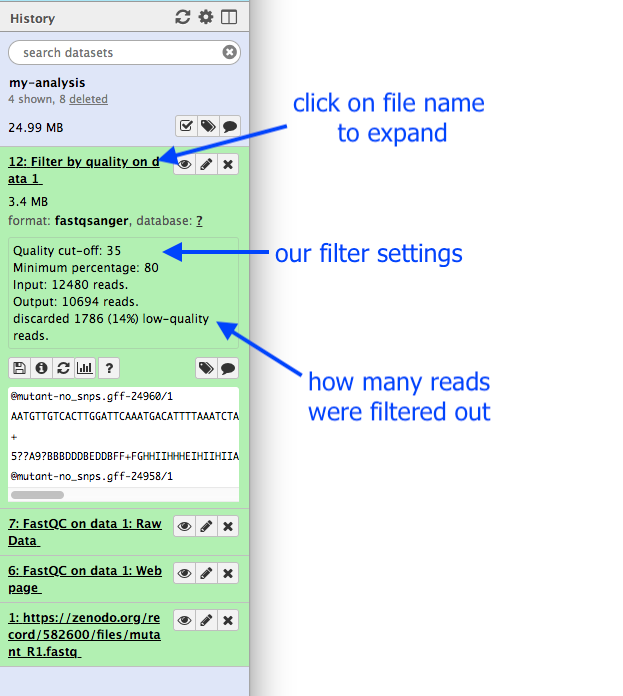
Optional: Re-run that tool with changed settings
We have now decided that our input reads have to be filtered to an even higher standard.
-
We will change the filter settings and re-run the tool.
-
In the History panel, find the output file from the first time we ran the filter tool.
- This file is called
Filter by quality on data 1 . - Click on the icon with two arrows - this means “run this tool again”.
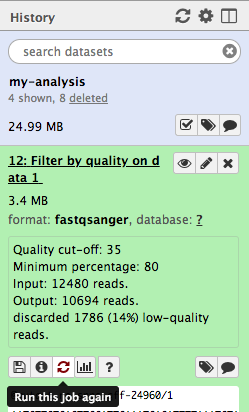 - This brings up the tool interface in the centre panel.
- Change the settings to something even stricter. For example, you might decide you want 80 percent of bases to have a quality of 36 or higher, instead of 35.
- Click
Execute .
View the results:
- Click on the output file name to expand the information. (Note: not the eye icon.)
- How many reads were discarded under these new filtering conditions?
You can re-run a tool many times with different settings.
- Each time you re-run the tool, the new output file will appear at the top of your current history.
Create a new history
Let’s create a new history.
- In the History panel, click on the cog icon.
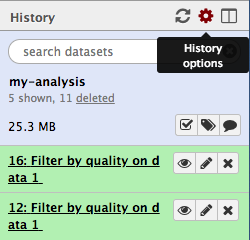 - Select
Create New . - Name your history, e.g.
Next-analysis - Press Enter
This new history does not have any files in it yet.
Look at all your histories
Where is your first history, called
- In the History panel, click on the “View all histories” icon.
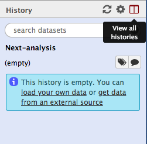 - All your histories are displayed here.
- Drag a file into your new history:
- Click on the FASTQ file in
my-analysis history - Drag it into the
Next-analysis history - This makes a copy of the file in the new history
- Click
Done
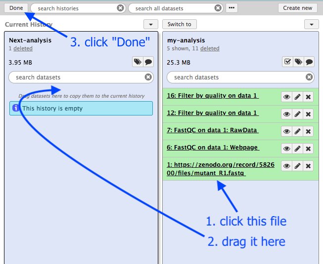
Your main Galaxy window will now show the current history as
You can go back into the “View all histories” page and “Switch to” a different history.
Summary
What have we learned?
- The Galaxy interface has tools on the left, viewing pane in the middle, and a history of your data analysis on the right.
- You can create a new history for each analysis. All your histories are saved.
- To get data into Galaxy, you can upload a file by pasting in a web address. There are other ways to get data into Galaxy (not covered in this tutorial): you can upload a file from your computer, and you can import an entire history.
- Choose a tool and change any settings for your analysis.
- Run the tool. The output files will be saved at the top of your history.
- View the output files by clicking on the eye icon.
- View all your histories and move files between them. Switch to a different history.
- Log out of your Galaxy server. When you log back in (to the same server), your histories will all be there.
Conclusion
Well done! You have completed the short introduction to Galaxy, where you named the history, uploaded a file, used a tool, and viewed results. Additional tutorials are available for a more in-depth introduction to Galaxy’s features.